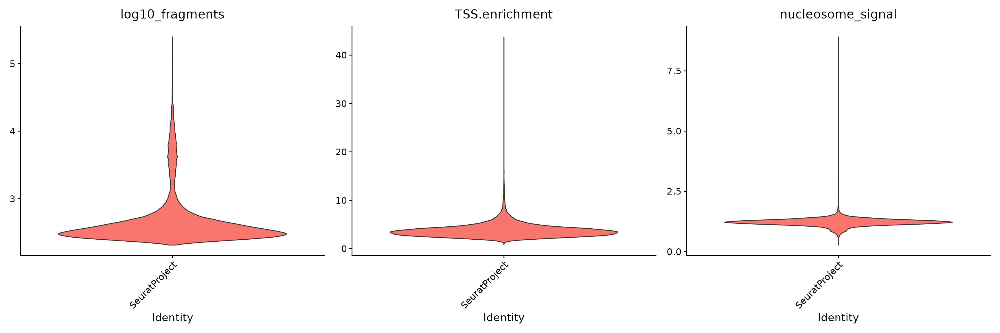
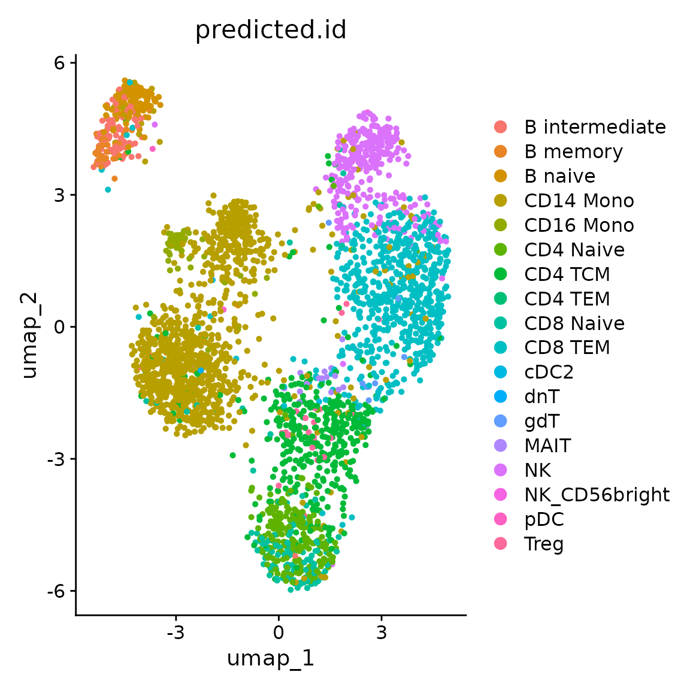
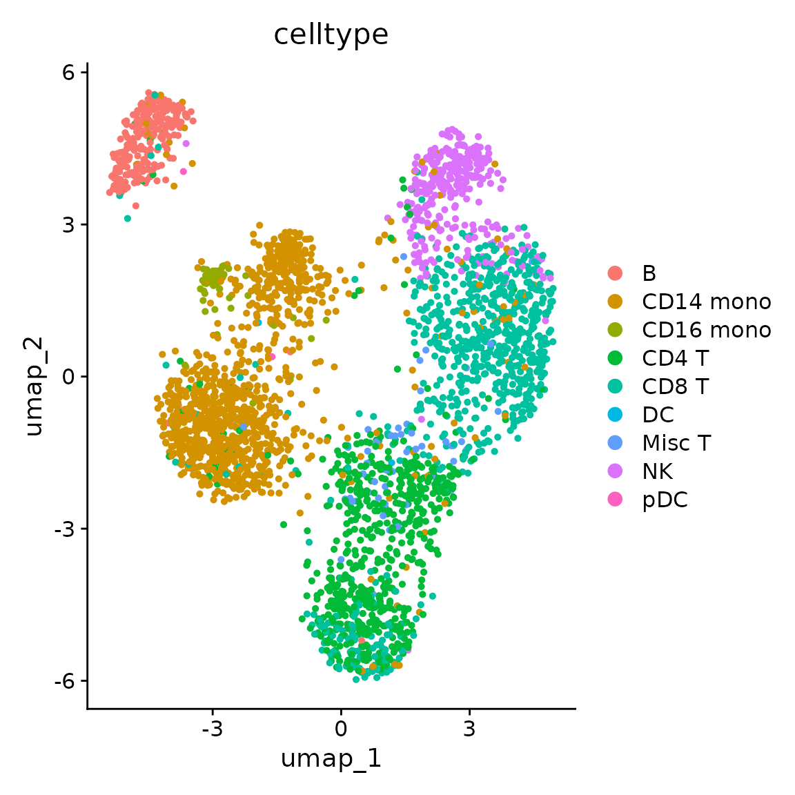
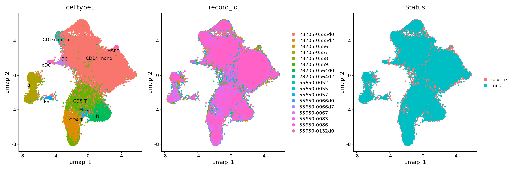
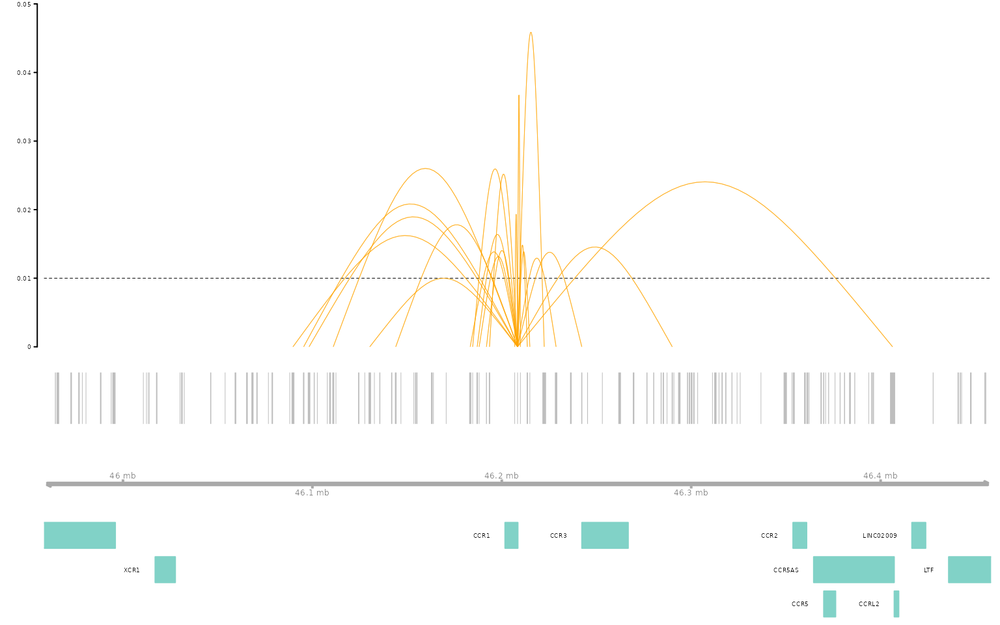
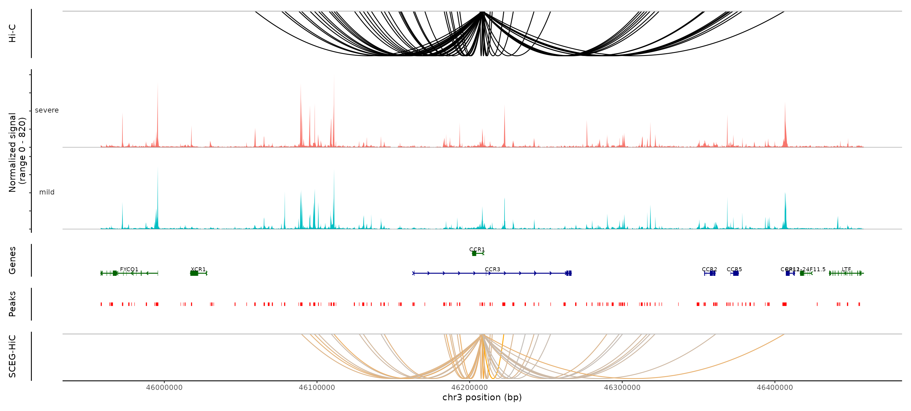

SCEG-HiC on only scATAC-seq data of human COVID 19-Mono
XuanLiang
Compiled: February 14, 2025
Source:vignettes/human_covid_19_scATAC_seq_mono.Rmd
human_covid_19_scATAC_seq_mono.RmdIn this vignette,we’ll demonstrate SCEG-HiC’s capability of inferring gene-enhancer by applying it to only scATAC-seq data.In this vignette we’ll be using a publicly available scATAC-seq dataset for human covid 19’s PBMC ,and only select monocytes for processing.
The implementent of SCEG-HiC is seamlessly compatible with the workflow of Seurat/Signac package, SCEG-HiC pipeline consists of the following three major parts:
- Set up a Seurat object.
- Infer gene-enhancer using SCEG-HiC by taking as input a Seurat object and the bulk average Hi-C.
- Visualize the gene-enhancer.
You can download the required data from GSE174072.A total of 18 samples were analyzed, and sample 28205-0560, with a WHO severity score of 8 (indicating a “fatal” status), was selected for exclusion.
View data download code
You can download the required scATAC-seq data by running the following lines in a shell:
wget https://ftp.ncbi.nlm.nih.gov/geo/samples/GSM5285nnn/GSM5285728/suppl/GSM5285728%5F55650%2D0055%5Ffragments.tsv.gz
wget https://ftp.ncbi.nlm.nih.gov/geo/samples/GSM5285nnn/GSM5285729/suppl/GSM5285729%5F55650%2D0057%5Ffragments.tsv.gz
wget https://ftp.ncbi.nlm.nih.gov/geo/samples/GSM5285nnn/GSM5285730/suppl/GSM5285730%5F55650%2D0132d0%5Ffragments.tsv.gz
wget https://ftp.ncbi.nlm.nih.gov/geo/samples/GSM5285nnn/GSM5285731/suppl/GSM5285731%5F55650%2D0052%5Ffragments.tsv.gz
wget https://ftp.ncbi.nlm.nih.gov/geo/samples/GSM5285nnn/GSM5285732/suppl/GSM5285732%5F28205%2D0555d0%5Ffragments.tsv.gz
wget https://ftp.ncbi.nlm.nih.gov/geo/samples/GSM5285nnn/GSM5285733/suppl/GSM5285733%5F28205%2D0555d2%5Ffragments.tsv.gz
wget https://ftp.ncbi.nlm.nih.gov/geo/samples/GSM5285nnn/GSM5285734/suppl/GSM5285734%5F28205%2D0556%5Ffragments.tsv.gz
wget https://ftp.ncbi.nlm.nih.gov/geo/samples/GSM5285nnn/GSM5285735/suppl/GSM5285735%5F28205%2D0557%5Ffragments.tsv.gz
wget https://ftp.ncbi.nlm.nih.gov/geo/samples/GSM5285nnn/GSM5285736/suppl/GSM5285736%5F28205%2D0558%5Ffragments.tsv.gz
wget https://ftp.ncbi.nlm.nih.gov/geo/samples/GSM5285nnn/GSM5285737/suppl/GSM5285737%5F28205%2D0559%5Ffragments.tsv.gz
wget https://ftp.ncbi.nlm.nih.gov/geo/samples/GSM5285nnn/GSM5285739/suppl/GSM5285739%5F28205%2D0564d0%5Ffragments.tsv.gz
wget https://ftp.ncbi.nlm.nih.gov/geo/samples/GSM5285nnn/GSM5285740/suppl/GSM5285740%5F28205%2D0564d2%5Ffragments.tsv.gz
wget https://ftp.ncbi.nlm.nih.gov/geo/samples/GSM5285nnn/GSM5285741/suppl/GSM5285741%5F55650%2D0066d0%5Ffragments.tsv.gz
wget https://ftp.ncbi.nlm.nih.gov/geo/samples/GSM5285nnn/GSM5285742/suppl/GSM5285742%5F55650%2D0066d7%5Ffragments.tsv.gz
wget https://ftp.ncbi.nlm.nih.gov/geo/samples/GSM5285nnn/GSM5285743/suppl/GSM5285743%5F55650%2D0067%5Ffragments.tsv.gz
wget https://ftp.ncbi.nlm.nih.gov/geo/samples/GSM5285nnn/GSM5285744/suppl/GSM5285744%5F55650%2D0083%5Ffragments.tsv.gz
wget https://ftp.ncbi.nlm.nih.gov/geo/samples/GSM5285nnn/GSM5285745/suppl/GSM5285745%5F55650%2D0086%5Ffragments.tsv.gzSet up a Seurat object
Here, sample 55650-0067 is used as an example.
# load the ATAC data
fragpath <- "hg38/GSM5285743_55650-0067_fragments.tsv.gz"
total_counts <- CountFragments(fragpath)
cutoff <- 1000 # Change this number depending on your dataset!
barcodes <- total_counts[total_counts$frequency_count > cutoff, ]$CB
# get gene annotations for hg38
annotation <- GetGRangesFromEnsDb(ensdb = EnsDb.Hsapiens.v86)
seqlevels(annotation) <- paste0("chr", seqlevels(annotation))
# Create a fragment object
frags <- CreateFragmentObject(path = fragpath, cells = barcodes)
# call peaks on the dataset
peaks <- CallPeaks(frags)
peaks <- keepStandardChromosomes(peaks, pruning.mode = "coarse")
peaks <- subsetByOverlaps(x = peaks, ranges = blacklist_hg38_unified, invert = TRUE)
# Quantify fragments in each peak
counts <- FeatureMatrix(fragments = frags, features = peaks, cells = barcodes)
# create ATAC assay and add it to the object
chrom_assay <- CreateChromatinAssay(
counts = counts,
sep = c(":", "-"),
fragments = frags,
annotation = annotation,
min.cells = 10,
min.features = 200
)
# create a Seurat object containing the ATAC data
covid_19 <- CreateSeuratObject(
counts = chrom_assay,
assay = "ATAC"
)
covid_19## An object of class Seurat
## 113561 features across 49691 samples within 1 assay
## Active assay: ATAC (113561 features, 0 variable features)
## 2 layers present: counts, data
# Quality control
DefaultAssay(covid_19) <- "ATAC"
covid_19 <- NucleosomeSignal(covid_19)
covid_19 <- TSSEnrichment(covid_19)
covid_19$log10_fragments <- log10(covid_19$nCount_ATAC + 1)
VlnPlot(
object = covid_19,
features = c("log10_fragments", "TSS.enrichment", "nucleosome_signal"),
ncol = 3,
pt.size = 0
)
# filter out low quality cells
ATAC_067 <- subset(
x = covid_19,
subset =
log10_fragments < 3.7 &
log10_fragments > 3 &
nucleosome_signal < 2 &
TSS.enrichment < 8
)
ATAC_067## An object of class Seurat
## 113561 features across 3046 samples within 1 assay
## Active assay: ATAC (113561 features, 0 variable features)
## 2 layers present: counts, dataCreate a common peak set
17 samples were processed following the steps outlined above. We can merge peaks from all the datasets to create a common peak set.
combined.peaks <- UnifyPeaks(object.list = list(ATAC_055, ATAC_057, ATAC_132D0, ATAC_052, ATAC_555_1, ATAC_555_2, ATAC_556, ATAC_557, ATAC_558, ATAC_559, ATAC_564A, ATAC_564B, ATAC_66D0, ATAC_66D7, ATAC_067, ATAC_083, ATAC_086), mode = "reduce")
# Save data
save(combined.peaks, file = "combined.peaks.rda")
# load common peak set
load("hg38/combined.peaks.rda")
peakwidths <- width(combined.peaks)
combined.peaks <- combined.peaks[peakwidths < 10000 & peakwidths > 20]
# Quantify peaks in each dataset
ATAC_067.counts <- FeatureMatrix(
fragments = Fragments(ATAC_067),
features = combined.peaks,
sep = c(":", "-"),
cells = colnames(ATAC_067)
)
frags.ATAC_067 <- CreateFragmentObject(
path = fragpath,
cells = colnames(ATAC_067)
)
ATAC_067[["raw"]] <- ATAC_067@assays[["ATAC"]]
ATAC_067[["ATAC"]] <- CreateChromatinAssay(counts = ATAC_067.counts, sep = c(":", "-"), fragments = frags.ATAC_067, annotation = annotation)
# add information
ATAC_067$record_id <- "55650-0067"
ATAC_067$MAX_SEVERITY_SCORE <- 2
ATAC_067## An object of class Seurat
## 308985 features across 3046 samples within 2 assays
## Active assay: ATAC (195424 features, 0 variable features)
## 2 layers present: counts, data
## 1 other assay present: rawAnnotating cell types
A public multiomic dataset from 10x Genomics on healthy PBMCswas used as an intermediate for cell type calls.We’ll use PBMC reference dataset from Hao et al. (2020) to annotate multiomic dataset.Each scATAC sample was then projected into the linear dimensionality reduction of the multiomic dataset.
Create a multiomic PBMC reference dataset
17 samples were processed following the steps outlined above. We can merge peaks from all the datasets to create a common peak set.
# Load the required libraries
library(Seurat)
library(Signac)
library(GenomicRanges)
library(GenomeInfoDb)
library(EnsDb.Hsapiens.v75)
library(EnsDb.Hsapiens.v86)
library(hdf5r)
# load the RNA and ATAC data
counts <- Read10X_h5("pbmc_granulocyte_sorted_10k_filtered_feature_bc_matrix.h5")
fragpath <- "pbmc_granulocyte_sorted_10k_atac_fragments.tsv.gz"
# get gene annotations for hg38
annotation <- GetGRangesFromEnsDb(ensdb = EnsDb.Hsapiens.v86)
seqlevels(annotation) <- paste0("chr", seqlevels(annotation))
# create a Seurat object containing the RNA data
reference <- CreateSeuratObject(
counts = counts$`Gene Expression`,
assay = "RNA"
)
# create ATAC assay and add it to the object
reference[["ATAC"]] <- CreateChromatinAssay(
counts = counts$Peaks,
sep = c(":", "-"),
fragments = fragpath,
annotation = annotation1
)
# Quality control
reference[["percent.mt"]] <- PercentageFeatureSet(reference, pattern = "^MT-")
DefaultAssay(reference) <- "ATAC"
reference <- NucleosomeSignal(reference)
reference <- TSSEnrichment(reference)
# filter out low quality cells
reference <- subset(
x = reference,
subset = nCount_ATAC < 100000 &
nCount_RNA < 15000 &
nCount_ATAC > 1000 &
nCount_RNA > 1000 &
nucleosome_signal < 2 &
TSS.enrichment > 1 &
percent.mt < 20
)
# Quality control
# call peaks using MACS2
peaks <- CallPeaks(reference)
# remove peaks on nonstandard chromosomes and in genomic blacklist regions
peaks <- keepStandardChromosomes(peaks, pruning.mode = "coarse")
peaks <- subsetByOverlaps(x = peaks, ranges = blacklist_hg38_unified, invert = TRUE)
# quantify counts in each peak
macs2_counts <- FeatureMatrix(
fragments = frags,
features = peaks,
cells = colnames(reference)
)
# create a new assay using the MACS2 peak set and add it to the Seurat object
reference[["peaks"]] <- CreateChromatinAssay(
counts = macs2_counts,
fragments = fragpath,
annotation = annotation
)
# RNA analysis
DefaultAssay(reference) <- "RNA"
reference <- SCTransform(reference)
reference <- RunPCA(reference)
# ATAC analysis
DefaultAssay(reference) <- "peaks"
DefaultAssay(reference) <- "ATAC"
reference <- FindTopFeatures(reference, min.cutoff = 5)
reference <- RunTFIDF(reference)
reference <- RunSVD(reference)
# Annotating cell types and Intergration analysis
library(SeuratDisk)
# load PBMC reference
reference <- LoadH5Seurat("pbmc_multimodal.h5seurat", assays = list("SCT" = "counts"), reductions = "spca")
reference <- UpdateSeuratObject(reference)
DefaultAssay(pbmc) <- "SCT"
# find transfer anchors
transfer_anchors <- FindTransferAnchors(
reference = pbmc.re,
query = reference,
normalization.method = "SCT",
reference.reduction = "spca",
recompute.residuals = FALSE,
dims = 1:50
)
predictions <- TransferData(
anchorset = transfer_anchors,
refdata = pbmc.re$celltype.l2,
weight.reduction = reference[["pca"]],
dims = 1:50
)
reference <- AddMetaData(
object = reference,
metadata = predictions
)
reference <- reference[, reference$prediction.score.max > 0.5]
# build a joint neighbor graph using both assays
reference <- FindMultiModalNeighbors(
object = reference,
reduction.list = list("pca", "lsi"),
dims.list = list(1:50, 2:40),
modality.weight.name = "RNA.weight",
verbose = TRUE
)
# build a joint UMAP visualization
reference <- RunUMAP(
object = reference,
nn.name = "weighted.nn",
assay = "RNA",
verbose = TRUE
)
# Save data
save(reference, file = "reference.rda")Annotating cell types
# load multiomic PBMC reference dataset
load("hg38/reference.rda")
annotation <- GetGRangesFromEnsDb(ensdb = EnsDb.Hsapiens.v86)
seqlevels(annotation) <- paste0("chr", seqlevels(annotation))
reference <- RunUMAP(reference, reduction = "lsi", dims = 2:30, return.model = TRUE)
# Quantify peaks in each dataset based on the reference dataset
DefaultAssay(reference) <- "ATAC"
counts <- FeatureMatrix(
fragments = Fragments(ATAC_067),
features = granges(reference),
cells = colnames(ATAC_067)
)
ATAC_067[["peaks"]] <- CreateChromatinAssay(
counts = counts,
fragments = Fragments(ATAC_067),
annotation = annotation
)
# ATAC analysis
DefaultAssay(ATAC_067) <- "peaks"
ATAC_067 <- FindTopFeatures(ATAC_067, min.cutoff = 10)
ATAC_067 <- RunTFIDF(ATAC_067)
ATAC_067 <- RunSVD(ATAC_067)
ATAC_067 <- RunUMAP(object = ATAC_067, reduction = "lsi", dims = 2:30)
# find transfer anchors
transfer.anchors <- FindTransferAnchors(
reference = reference,
query = ATAC_067,
reference.reduction = "lsi",
reduction = "lsiproject",
dims = 2:30
)
# map query onto the reference dataset
ATAC_067 <- MapQuery(
anchorset = transfer.anchors,
reference = reference,
query = ATAC_067,
refdata = reference$predicted.id,
reference.reduction = "lsi",
new.reduction.name = "ref.lsi",
reduction.model = "umap"
)
DimPlot(ATAC_067, label = FALSE, group.by = "predicted.id", repel = TRUE, reduction = "umap", label.size = 4, pt.size = 1)
# Rename celltype
ATAC_067$celltype <- recode(ATAC_067@meta.data[["predicted.id"]],
"B intermediate" = "B", "B memory" = "B", "B naive" = "B", "Plasmablast" = "PB", "B immature" = "B", "CD4 CTL" = "CD4 T",
"CD4 Naive" = "CD4 T", "CD4 TCM" = "CD4 T", "CD4 TEM" = "CD4 T", "CD8 Naive" = "CD8 T", "CD8 TCM" = "CD8 T", "CD8 TEM" = "CD8 T", "Proliferating" = "Proliferating", "MAIT" = "Misc T",
"gdT" = "Misc T", "Treg" = "Misc T", "dnT" = "Misc T", "NK" = "NK", "NK_CD56bright" = "NK", "NK_CD56" = "NK", "CD14 Mono" = "CD14 mono", "CD16 Mono" = "CD16 mono", "pDC" = "pDC", "cDC1" = "DC", "cDC2" = "DC",
"ASDC" = "DC", "Platelet" = "Platelet", "Eryth" = "Eryth", "HSPC" = "HSPC"
)
DimPlot(ATAC_067, label = FALSE, group.by = "celltype", repel = TRUE, reduction = "umap", label.size = 4, pt.size = 1)
Merge objects
17 samples were processed following the steps outlined above. we can use Signac’s the standard merge function from Seurat to merge the objects.
seurat_list <- list(
ATAC_055, ATAC_057, ATAC_132D0, ATAC_052, ATAC_555_1, ATAC_555_2, ATAC_556, ATAC_557,
ATAC_558, ATAC_559, ATAC_564A, ATAC_564B, ATAC_66D0, ATAC_66D7, ATAC_067, ATAC_083, ATAC_086
)
# merge all datasets
covid_19 <- Reduce(function(x, y) {
merge(x, y, add.cell.ids = c(1, 2))
}, seurat_list)
# Save data
save(covid_19, file = "covid_19_merge.rda")ATAC analysis
# load merge data
load("hg38/covid_19_merge.rda")
DefaultAssay(covid_19) <- "ATAC"
covid_19 <- FindTopFeatures(covid_19, min.cutoff = 10)
covid_19 <- RunTFIDF(covid_19)
covid_19 <- RunSVD(covid_19)
# Remove batch effects
library(harmony)
covid_19 <- RunHarmony(covid_19,
group.by.vars = "record_id",
reduction.use = "lsi",
reduction.save = "harmony",
assay.use = "ATAC",
project.dim = FALSE
)
covid_19 <- RunUMAP(object = covid_19, reduction = "harmony", dims = 2:30)Annotating cell types
covid_19 <- FindNeighbors(object = covid_19, reduction = "harmony", dims = 2:30)
covid_19 <- FindClusters(object = covid_19, verbose = FALSE, resolution = 8, algorithm = 3)
# assigning cell types and colors for visualization
temp <- table(covid_19$predicted.id, covid_19$seurat_clusters)
wnn.celltype <- rep(NA, length(levels(covid_19$seurat_clusters)))
p <- DimPlot(covid_19,
reduction = "umap", group.by = "predicted.id",
label = TRUE, label.size = 2.5, repel = TRUE
)
for (i in 1:length(wnn.celltype)) {
temp.i_1 <- temp[, colnames(temp) == as.character(i - 1)]
wnn.celltype[i] <- names(temp.i_1)[which.max(temp.i_1)]
}
## get the corresponding color for each cell type from Seurat
pbuild <- ggplot2::ggplot_build(p)
pdata <- pbuild$data[[1]]
pdata <- cbind(covid_19$predicted.id, pdata)
wnn.celltype.col <- rep(NA, length(wnn.celltype))
for (i in 1:length(wnn.celltype)) {
wnn.celltype.col[i] <- pdata$colour[min(which(pdata$`covid_19$predicted.id` == wnn.celltype[i]))]
}
names(wnn.celltype) <- levels(covid_19)
covid_19 <- RenameIdents(covid_19, wnn.celltype)
# Rename celltype
covid_19$celltype1 <- recode(Idents(covid_19),
"B intermediate" = "B", "B memory" = "B", "B naive" = "B", "Plasmablast" = "PB", "B immature" = "B", "CD4 CTL" = "CD4 T",
"CD4 Naive" = "CD4 T", "CD4 TCM" = "CD4 T", "CD4 TEM" = "CD4 T", "CD8 Naive" = "CD8 T", "CD8 TCM" = "CD8 T", "CD8 TEM" = "CD8 T", "Proliferating" = "Proliferating", "MAIT" = "Misc T",
"gdT" = "Misc T", "Treg" = "Misc T", "dnT" = "Misc T", "NK" = "NK", "NK_CD56bright" = "NK", "NK_CD56" = "NK", "CD14 Mono" = "CD14 mono", "CD16 Mono" = "CD16 mono", "pDC" = "pDC", "cDC1" = "DC", "cDC2" = "DC",
"ASDC" = "DC", "Platelet" = "Platelet", "Eryth" = "Eryth", "HSPC" = "HSPC"
)
class <- ifelse(covid_19@meta.data[["MAX_SEVERITY_SCORE"]] > 4, "severe", "mild")
class <- factor(class, levels = c("severe", "mild"))
covid_19$Status <- class
p1 <- DimPlot(covid_19, label = TRUE, group.by = "celltype1", repel = TRUE, reduction = "umap", label.size = 4, pt.size = 1) + NoLegend()
p2 <- DimPlot(covid_19, label = FALSE, group.by = "record_id", repel = TRUE, reduction = "umap", label.size = 4, pt.size = 1)
p3 <- DimPlot(covid_19, label = FALSE, group.by = "Status", repel = TRUE, reduction = "umap", label.size = 4, pt.size = 1)
p1 + p2 + p3 & theme(plot.title = element_text(hjust = 0.5))
Infer gene-enhancer using SCEG-HiC
Preprocess data
Here, we only select monocytes with only scATAC-seq data.By default, the scATAC-seq counts are binarized.
SCEGdata <- process_data(covid_19, aggregate = FALSE, celltype = "CD14 mono", atac_assay = "ATAC", cellnames = "celltype1")Calculate weight
In this case, we select the human average Hi-C data for analysis.
# For example, Calculate weight for monocytes mild and severe differential genes: CCR1
weight <- calculateHiCWeights(SCEGdata, species = "Homo sapiens", genome = "hg38", focus_gene = "CCR1", averHicPath = "/picb/bigdata/project/liangxuan/data/human_contact/AvgHiC")## Successfully obtained 1 TSS loci of genes from chromosome 3.## Calculate weight of CCR1Run model
SCEG-HiC uses wglasso machine learning method and normalizes the bulk average Hi-C matrix using rank score.
# For example, Run model for monocytes mild and severe differential genes: CCR1
results_SCEGHiC <- Run_SCEG_HiC(SCEGdata, weight, focus_gene = "CCR1")## The predicted genes are 1 in total.## Run model of CCR1Visualize the gene-enhancer
Visualize the links
temp <- tempfile()
download.file("https://hgdownload2.soe.ucsc.edu/goldenPath/hg38/bigZips/genes/hg38.refGene.gtf.gz", temp)
gene_anno <- rtracklayer::readGFF(temp)
unlink(temp)
# rename some columns to match requirements
gene_anno$chromosome <- gene_anno$seqid
gene_anno$gene <- gene_anno$gene_id
gene_anno$transcript <- gene_anno$transcript_id
gene_anno$symbol <- gene_anno$gene_name
connections_Plot(results_SCEGHiC, species = "Homo sapiens", genome = "hg38", focus_gene = "CCR1", cutoff = 0.01, gene_anno = gene_anno)
Coverage plot and visualize the links of CCR1
Here, the truth of monocyte is sourced from the ENCODE database.
# load the truth of monocyte data
load("truth_mono.rda")
# select monocyte
celltype <- "CD14 mono"
keep <- which(covid_19$celltype1 %in% celltype)
dataset <- subset(covid_19, cells = keep)
# Coverage plot and visualize the links of CCR1
coverPlot(dataset, focus_gene = "CCR1", species = "Homo sapiens", genome = "hg38", assay = "ATAC", HIC_Result = truth_mono, SCEG_HiC_Result = results_SCEGHiC, SCEG_HiC_cutoff = 0.001, cellnames = "Status")
Session Info
## R version 4.4.2 (2024-10-31)
## Platform: x86_64-conda-linux-gnu
## Running under: CentOS Linux 7 (Core)
##
## Matrix products: default
## BLAS/LAPACK: /home/liangxuan/conda/envs/test/lib/libopenblasp-r0.3.28.so; LAPACK version 3.12.0
##
## locale:
## [1] LC_CTYPE=en_US.UTF-8 LC_NUMERIC=C
## [3] LC_TIME=en_US.UTF-8 LC_COLLATE=en_US.UTF-8
## [5] LC_MONETARY=en_US.UTF-8 LC_MESSAGES=en_US.UTF-8
## [7] LC_PAPER=en_US.UTF-8 LC_NAME=C
## [9] LC_ADDRESS=C LC_TELEPHONE=C
## [11] LC_MEASUREMENT=en_US.UTF-8 LC_IDENTIFICATION=C
##
## time zone: Asia/Shanghai
## tzcode source: system (glibc)
##
## attached base packages:
## [1] stats4 stats graphics grDevices datasets utils methods
## [8] base
##
## other attached packages:
## [1] harmony_1.2.3 Rcpp_1.0.14
## [3] dplyr_1.1.4 ggplot2_3.5.1
## [5] EnsDb.Hsapiens.v86_2.99.0 ensembldb_2.30.0
## [7] AnnotationFilter_1.30.0 GenomicFeatures_1.58.0
## [9] AnnotationDbi_1.68.0 Biobase_2.66.0
## [11] GenomicRanges_1.58.0 GenomeInfoDb_1.42.1
## [13] IRanges_2.40.1 S4Vectors_0.44.0
## [15] BiocGenerics_0.52.0 Signac_1.14.9001
## [17] Seurat_5.2.0 SeuratObject_5.0.2
## [19] sp_2.1-4 SCEGHiC_0.0.0.9000
##
## loaded via a namespace (and not attached):
## [1] fs_1.6.5 ProtGenerics_1.38.0
## [3] matrixStats_1.5.0 spatstat.sparse_3.1-0
## [5] bitops_1.0-9 httr_1.4.7
## [7] RColorBrewer_1.1-3 tools_4.4.2
## [9] sctransform_0.4.1 backports_1.5.0
## [11] R6_2.5.1 uwot_0.2.2
## [13] lazyeval_0.2.2 Gviz_1.50.0
## [15] cicero_1.3.9 withr_3.0.2
## [17] prettyunits_1.2.0 gridExtra_2.3
## [19] progressr_0.15.1 cli_3.6.3
## [21] textshaping_0.4.0 spatstat.explore_3.3-4
## [23] fastDummies_1.7.4 labeling_0.4.3
## [25] slam_0.1-55 sass_0.4.9
## [27] spatstat.data_3.1-4 ggridges_0.5.6
## [29] pbapply_1.7-2 pkgdown_2.1.1
## [31] Rsamtools_2.22.0 systemfonts_1.1.0
## [33] foreign_0.8-88 R.utils_2.12.3
## [35] dichromat_2.0-0.1 parallelly_1.41.0
## [37] BSgenome_1.74.0 VGAM_1.1-12
## [39] rstudioapi_0.17.1 RSQLite_2.3.9
## [41] FNN_1.1.4.1 generics_0.1.3
## [43] BiocIO_1.16.0 ica_1.0-3
## [45] spatstat.random_3.3-2 Matrix_1.6-5
## [47] interp_1.1-6 ggbeeswarm_0.7.2
## [49] abind_1.4-8 R.methodsS3_1.8.2
## [51] lifecycle_1.0.4 yaml_2.3.10
## [53] SummarizedExperiment_1.36.0 SparseArray_1.6.0
## [55] BiocFileCache_2.14.0 Rtsne_0.17
## [57] grid_4.4.2 blob_1.2.4
## [59] promises_1.3.2 crayon_1.5.3
## [61] miniUI_0.1.1.1 lattice_0.22-6
## [63] cowplot_1.1.3 KEGGREST_1.46.0
## [65] pillar_1.10.1 knitr_1.49
## [67] boot_1.3-31 rjson_0.2.23
## [69] future.apply_1.11.3 codetools_0.2-20
## [71] fastmatch_1.1-6 glue_1.8.0
## [73] spatstat.univar_3.1-1 data.table_1.16.4
## [75] Rdpack_2.6.2 vctrs_0.6.5
## [77] png_0.1-8 spam_2.11-0
## [79] gtable_0.3.6 assertthat_0.2.1
## [81] cachem_1.1.0 xfun_0.50
## [83] rbibutils_2.3 S4Arrays_1.6.0
## [85] mime_0.12 reformulas_0.4.0
## [87] survival_3.8-3 SingleCellExperiment_1.28.1
## [89] RcppRoll_0.3.1 fitdistrplus_1.2-2
## [91] ROCR_1.0-11 nlme_3.1-166
## [93] bit64_4.5.2 progress_1.2.3
## [95] filelock_1.0.3 RcppAnnoy_0.0.22
## [97] bslib_0.8.0 irlba_2.3.5.1
## [99] vipor_0.4.7 KernSmooth_2.23-26
## [101] rpart_4.1.24 colorspace_2.1-1
## [103] DBI_1.2.3 Hmisc_5.2-2
## [105] nnet_7.3-20 ggrastr_1.0.2
## [107] tidyselect_1.2.1 bit_4.5.0.1
## [109] compiler_4.4.2 curl_6.0.1
## [111] httr2_1.0.7 htmlTable_2.4.3
## [113] xml2_1.3.6 desc_1.4.3
## [115] DelayedArray_0.32.0 plotly_4.10.4
## [117] rtracklayer_1.66.0 checkmate_2.3.2
## [119] scales_1.3.0 lmtest_0.9-40
## [121] rappdirs_0.3.3 goftest_1.2-3
## [123] stringr_1.5.1 digest_0.6.37
## [125] minqa_1.2.8 spatstat.utils_3.1-2
## [127] reader_1.0.6 rmarkdown_2.29
## [129] RhpcBLASctl_0.23-42 XVector_0.46.0
## [131] htmltools_0.5.8.1 pkgconfig_2.0.3
## [133] jpeg_0.1-10 base64enc_0.1-3
## [135] lme4_1.1-36 MatrixGenerics_1.18.1
## [137] dbplyr_2.5.0 fastmap_1.2.0
## [139] rlang_1.1.4 htmlwidgets_1.6.4
## [141] UCSC.utils_1.2.0 shiny_1.10.0
## [143] farver_2.1.2 jquerylib_0.1.4
## [145] zoo_1.8-12 jsonlite_1.8.9
## [147] BiocParallel_1.40.0 R.oo_1.27.0
## [149] VariantAnnotation_1.52.0 RCurl_1.98-1.16
## [151] magrittr_2.0.3 Formula_1.2-5
## [153] GenomeInfoDbData_1.2.13 dotCall64_1.2
## [155] patchwork_1.3.0 munsell_0.5.1
## [157] reticulate_1.40.0 stringi_1.8.4
## [159] zlibbioc_1.52.0 MASS_7.3-64
## [161] plyr_1.8.9 parallel_4.4.2
## [163] listenv_0.9.1 ggrepel_0.9.6
## [165] deldir_2.0-4 Biostrings_2.74.1
## [167] splines_4.4.2 tensor_1.5
## [169] hms_1.1.3 igraph_2.0.3
## [171] spatstat.geom_3.3-4 RcppHNSW_0.6.0
## [173] reshape2_1.4.4 biomaRt_2.62.0
## [175] XML_3.99-0.17 evaluate_1.0.3
## [177] latticeExtra_0.6-30 biovizBase_1.54.0
## [179] renv_1.0.11 BiocManager_1.30.25
## [181] NCmisc_1.2.0 nloptr_2.1.1
## [183] tweenr_2.0.3 httpuv_1.6.15
## [185] RANN_2.6.2 tidyr_1.3.1
## [187] purrr_1.0.2 polyclip_1.10-7
## [189] future_1.34.0 scattermore_1.2
## [191] ggforce_0.4.2 monocle3_1.3.7
## [193] xtable_1.8-4 restfulr_0.0.15
## [195] RSpectra_0.16-2 later_1.4.1
## [197] glasso_1.11 viridisLite_0.4.2
## [199] ragg_1.3.3 tibble_3.2.1
## [201] beeswarm_0.4.0 memoise_2.0.1
## [203] GenomicAlignments_1.42.0 cluster_2.1.8
## [205] globals_0.16.3